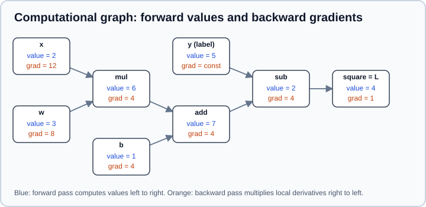

Backpropagation & Automatic Differentiation
|
This content was generated with the assistance of AI and should be verified against the official documentation before being relied on in production. |
Training a neural network means finding weights that make a loss small, and gradient descent needs the gradient of that loss with respect to every weight. A modern network has millions or billions of weights, so the gradient must be computed in time comparable to a single forward pass. Backpropagation does that: it applies the chain rule backwards through the network, reusing intermediate results. Automatic differentiation (autodiff) is the general machinery that frameworks use to perform backpropagation for any program built from differentiable operations, so you write the forward computation and the framework supplies the gradients.
Examples target Python 3.13, PyTorch 2.15, TensorFlow 2.21 with Keras 3.15 and JAX. The facts were checked on 2026-10-30. Examples were run on Python 3.13 with NumPy 2, PyTorch 2.15 (CPU), TensorFlow 2.21 with Keras 3.15 and JAX 0.12 on 2026-11-01. The network and the loss come from Neural Network Fundamentals and Loss Functions & Information Theory; the update rule that consumes the gradients is in Gradient Descent & Optimization. Derivatives and the chain rule are reviewed in Math for ML.
The chain rule
If \(y = f(g(x))\), then \(\dfrac{dy}{dx} = \dfrac{dy}{dg}\cdot\dfrac{dg}{dx}\). For a composition of many functions the derivative is a product of the local derivatives along the path. For several variables, the contributions of every path from the output back to a parameter are summed:
\[ \frac{\partial L}{\partial w} = \sum_{\text{paths } w \to L}\ \prod_{\text{edges on the path}} \frac{\partial (\text{node})}{\partial (\text{input})} \]
Computing that sum path by path would be exponential in the depth. Backpropagation computes it in linear time by processing the nodes in reverse order and storing, for each node, the derivative of the loss with respect to that node’s output. That stored quantity is usually called the gradient, adjoint or upstream gradient of the node.
Computational graphs
Any computation can be drawn as a graph whose nodes are operations (add, multiply, matrix product, ReLU) and whose edges carry values. The forward pass evaluates the graph from inputs to the loss and keeps the intermediate values it will need later. The backward pass visits the nodes in reverse and, at each node, multiplies the incoming gradient by the node’s local derivative to produce the gradient for each of its inputs.
The following example is the squared error of a one-weight linear model, \(L = (wx + b - y)^2\), with \(x=2\), \(w=3\), \(b=1\) and \(y=5\).

Reading the figure from right to left:
-
The loss node is the square of the difference \(d = 2\). Its gradient with respect to itself is 1, and \(\partial L/\partial d = 2d = 4\).
-
The subtraction passes the gradient through unchanged to its first input (+1) and negates it for \(y\) (-1). The add node does the same, so \(\partial L/\partial b = 4\) and the gradient reaching the product is 4.
-
The multiplication node swaps its inputs: \(\partial L/\partial w = 4\cdot x = 8\) and \(\partial L/\partial x = 4\cdot w = 12\).
The local rules are few and worth memorising: addition distributes the gradient to its inputs, multiplication gives each input the gradient times the other input, a ReLU lets the gradient through where its input was positive and blocks it elsewhere (it acts as a gate), and a max routes the gradient to the winning input. A variable used in several places collects the sum of the gradients arriving from each use, which is why accumulation matters in the framework APIs below.
Backpropagation in a multilayer perceptron
For a layer \(\mathbf{z} = \mathbf{W}\mathbf{h}_{\text{in}} + \mathbf{b}\), \(\mathbf{h} = f(\mathbf{z})\), let \(\boldsymbol{\delta} = \partial L/\partial \mathbf{z}\) be the gradient at the pre-activation. With a batch of examples stored as rows, the backward pass is a handful of matrix products:
\[ \boldsymbol{\delta} = \frac{\partial L}{\partial \mathbf{h}} \odot f'(\mathbf{z}), \qquad \frac{\partial L}{\partial \mathbf{W}} = \mathbf{h}_{\text{in}}^\top \boldsymbol{\delta}, \qquad \frac{\partial L}{\partial \mathbf{b}} = \sum_{\text{batch}} \boldsymbol{\delta}, \qquad \frac{\partial L}{\partial \mathbf{h}_{\text{in}}} = \boldsymbol{\delta}\,\mathbf{W}^\top \]
where \(\odot\) is element-wise multiplication. The last quantity is the upstream gradient for the previous layer, so the recursion continues down to the first layer. For softmax followed by cross-entropy, the gradient at the logits simplifies to \((\mathbf{p} - \mathbf{y}_{\text{onehot}})/N\), which is why the fused loss functions are both faster and more stable than computing the pieces separately.
Two practical consequences follow. The backward pass needs the forward activations (\(\mathbf{h}_{\text{in}}\) and \(\mathbf{z}\)), so training memory grows with depth and batch size; this is the cost that activation checkpointing trades for extra compute. And the backward pass costs roughly two matrix products per forward matrix product, so a training step is a few times more expensive than inference.
The following NumPy implementation backpropagates through a two-layer ReLU network with a softmax cross-entropy loss, then checks one gradient entry against a finite-difference estimate. This gradient check is the classic way to validate hand-written backward code.
import numpy as np
rng = np.random.default_rng(0)
N, D, H, K = 6, 4, 5, 3
X = rng.normal(size=(N, D))
y = rng.integers(0, K, size=N)
W1 = rng.normal(size=(D, H)) * 0.5
b1 = np.zeros(H)
W2 = rng.normal(size=(H, K)) * 0.5
b2 = np.zeros(K)
def forward(W1, b1, W2, b2):
z1 = X @ W1 + b1
h = np.maximum(z1, 0.0)
logits = h @ W2 + b2
logits = logits - logits.max(axis=1, keepdims=True)
p = np.exp(logits)
p /= p.sum(axis=1, keepdims=True)
loss = -np.log(p[np.arange(N), y]).mean()
return loss, (z1, h, p)
def backward(W1, b1, W2, b2):
loss, (z1, h, p) = forward(W1, b1, W2, b2)
dlogits = p.copy()
dlogits[np.arange(N), y] -= 1.0
dlogits /= N # d loss / d logits
dW2 = h.T @ dlogits
db2 = dlogits.sum(axis=0)
dh = dlogits @ W2.T
dz1 = dh * (z1 > 0) # ReLU gate
dW1 = X.T @ dz1
db1 = dz1.sum(axis=0)
return loss, dW1, db1, dW2, db2
loss, dW1, db1, dW2, db2 = backward(W1, b1, W2, b2)
eps = 1e-6 # central finite difference for W1[1, 2]
W1p, W1m = W1.copy(), W1.copy()
W1p[1, 2] += eps
W1m[1, 2] -= eps
numeric = (forward(W1p, b1, W2, b2)[0] - forward(W1m, b1, W2, b2)[0]) / (2 * eps)
print("analytic:", round(dW1[1, 2], 8), "numeric:", round(numeric, 8))Output:
analytic: 0.01926876 numeric: 0.01926876
Forward mode and reverse mode
Autodiff comes in two modes that traverse the same graph in opposite directions.
| Forward mode | Reverse mode (backpropagation) | |
|---|---|---|
Computes |
A Jacobian-vector product (JVP): how every output changes along one input direction |
A vector-Jacobian product (VJP): how one output depends on every input |
One pass gives |
The derivative with respect to one input (or one direction) |
The derivative of one scalar output with respect to all inputs |
Cost for \(n\) inputs and \(m\) outputs |
About \(n\) passes for a full Jacobian |
About \(m\) passes for a full Jacobian |
Memory |
Little: no need to store the whole graph |
More: the forward values must be kept |
Best when |
Few inputs, many outputs (for example Jacobian of a small function, directional derivatives) |
Many inputs, one output: a scalar loss over millions of weights |
A training loss is a single scalar and the parameters are numerous, so deep learning uses reverse mode almost exclusively. Forward mode is available when needed (torch.func.jvp, jax.jvp, tf.autodiff.ForwardAccumulator), and the two can be combined for Hessian-vector products. Autodiff is neither symbolic differentiation (which manipulates formulas and can blow up in size) nor numerical differentiation (finite differences, which are approximate and need one evaluation per parameter): it evaluates exact derivatives of the operations the program actually executed, up to floating-point rounding.
PyTorch autograd
PyTorch builds the graph dynamically while the forward code runs ("define by run"). A tensor created with requires_grad=True is tracked; every operation on tracked tensors records a grad_fn; calling .backward() on a scalar walks the graph in reverse and stores the results in the .grad attribute of the leaf tensors. Parameters of nn.Module layers are leaf tensors with requires_grad=True by default.
import torch
x = torch.tensor(2.0)
w = torch.tensor(3.0, requires_grad=True)
b = torch.tensor(1.0, requires_grad=True)
y = torch.tensor(5.0)
loss = (w * x + b - y) ** 2
print(loss.item(), loss.grad_fn)
loss.backward()
print(w.grad.item(), b.grad.item())Output:
4.0 <PowBackward0 object at 0x...> 8.0 4.0
Source: PyTorch tutorial: Automatic differentiation with torch.autograd, "Computing gradients". The object address in the grad_fn line differs from run to run.
The numbers match the figure above. The behaviour that surprises newcomers is accumulation: .backward() adds to .grad instead of overwriting it, because a variable used several times needs the sum of its contributions. A training loop must therefore clear the gradients every step.
import torch
w = torch.tensor(3.0, requires_grad=True)
x, b, y = torch.tensor(2.0), torch.tensor(1.0), torch.tensor(5.0)
for _ in range(2):
loss = (w * x + b - y) ** 2
loss.backward()
print("accumulated:", w.grad.item()) # 16.0, not 8.0
w.grad = None # what optimizer.zero_grad() does by defaultSource: PyTorch tutorial: Automatic differentiation with torch.autograd, "Tensor gradients and Jacobian products", which shows the same accumulation.
optimizer.zero_grad() sets gradients to None by default (set_to_none=True since PyTorch 2.0), which is cheaper than filling them with zeros. Accumulation is also useful on purpose: call backward() on several micro-batches (dividing each loss by the number of micro-batches) before one optimizer.step() to simulate a larger batch.
The canonical training step
import torch
model = torch.nn.Linear(3, 1)
optimizer = torch.optim.SGD(model.parameters(), lr=0.1)
xb, yb = torch.randn(16, 3), torch.randn(16, 1)
for step in range(3):
optimizer.zero_grad() # 1. clear old gradients
loss = torch.nn.functional.mse_loss(model(xb), yb) # 2. forward
loss.backward() # 3. backward: fills p.grad
optimizer.step() # 4. update parameters
print(step, round(loss.item(), 4))The loss decreases at each step (the exact values depend on the random data). Call scheduler.step() after optimizer.step() if you use a learning-rate schedule; schedules are covered in Optimizers & Learning-Rate Schedules.
Controlling what is tracked
| Tool | Effect |
|---|---|
|
Operations inside are not recorded; use for evaluation and for updates written by hand. Outputs have |
|
A stricter, faster variant of no-grad for pure inference. Tensors created inside cannot later take part in autograd, even outside the block. |
|
Returns a tensor that shares data but is cut from the graph; use to stop gradients flowing into a target network or a cached value. |
|
Freezes a parameter, as in transfer learning or a frozen backbone. |
|
Leave the graph. Calling |
|
Keeps |
The graph is freed after backward() to save memory, so calling backward() twice on the same graph raises an error unless you pass retain_graph=True. That flag is rarely the right fix: it usually means a tensor from a previous iteration is being reused and should be detached.
Non-scalar outputs, autograd.grad and higher-order derivatives
.backward() needs a scalar. For a vector output you must supply the vector in the vector-Jacobian product, out.backward(gradient=v). torch.autograd.grad returns gradients instead of accumulating them into .grad, and create_graph=True records the backward pass itself so you can differentiate again.
import torch
v = torch.tensor([1.0, 2.0, 3.0], requires_grad=True)
out = v ** 2
out.backward(torch.ones_like(out)) # vector-Jacobian product with a vector of ones
print(v.grad) # tensor([2., 4., 6.])
t = torch.tensor(2.0, requires_grad=True)
f = t ** 3
(g,) = torch.autograd.grad(f, t, create_graph=True) # 3 t^2 = 12
(g2,) = torch.autograd.grad(g, t) # 6 t = 12
print(g.item(), g2.item())Higher-order derivatives appear in gradient penalties (WGAN-GP), meta-learning and physics-informed networks.
In-place operations and version counters
Autograd saves the tensors it needs for the backward pass. If you modify one of them in place afterwards, the saved value is stale and PyTorch raises RuntimeError: one of the variables needed for gradient computation has been modified by an inplace operation. For example, torch.exp saves its output, so s = torch.exp(a); s.add_(1); s.sum().backward() fails. Replace the in-place operation (s = s + 1) or clone() first. Leaf tensors that require gradients cannot be modified in place at all outside torch.no_grad().
Functional transforms: torch.func
torch.func offers JAX-style function transforms on PyTorch tensors: grad, vjp, jvp, jacrev, jacfwd, hessian and vmap. The most useful trick for deep learning is per-sample gradients, which a normal backward pass cannot give because it sums over the batch.
import torch
from torch.func import grad, vmap
def squared_error(w, x):
return (w * x - 1.0) ** 2
w = torch.tensor(2.0)
xs = torch.tensor([1.0, 2.0, 3.0])
per_sample = vmap(grad(squared_error), in_dims=(None, 0))(w, xs)
print(per_sample) # tensor([ 2., 12., 30.])Source: PyTorch tutorial: Per-sample gradients and torch.func.
Custom backward functions and gradient checking
To define an operation whose gradient you supply (a non-differentiable step, a numerically stable formulation, or a custom CUDA kernel), subclass torch.autograd.Function. torch.autograd.gradcheck compares your backward with finite differences; run it in float64, as finite differences are unreliable in float32.
import torch
from torch.autograd import gradcheck
class Square(torch.autograd.Function):
@staticmethod
def forward(ctx, x):
ctx.save_for_backward(x)
return x * x
@staticmethod
def backward(ctx, grad_output):
(x,) = ctx.saved_tensors
return 2 * x * grad_output
x = torch.randn(3, dtype=torch.double, requires_grad=True)
print(gradcheck(Square.apply, (x,))) # TrueSource: Extending PyTorch and torch.autograd.gradcheck.
For a rarely needed straight-through estimator, return the gradient you want from backward rather than the true derivative of the forward function.
Debugging gradients
-
torch.autograd.set_detect_anomaly(True)(or the context manager) reports the forward operation that produced ananor infinite gradient. It is slow, so enable it only while debugging. -
tensor.register_hook(fn)andmodule.register_full_backward_hook(fn)let you inspect or modify gradients as they flow. -
Print per-layer gradient norms (
p.grad.norm()) afterbackward(). Norms that shrink by orders of magnitude toward the input indicate vanishing gradients;nanindicates a numerical problem (a log of zero, a division by zero, an overflow). -
Activation checkpointing (
torch.utils.checkpoint.checkpoint) trades compute for memory by recomputing a block’s activations during backward. Passuse_reentrant=Falseexplicitly.
For the debugging tools see torch.autograd (anomaly detection and hooks) and PyTorch: Autograd mechanics.
TensorFlow GradientTape
TensorFlow records operations on a tape while the code inside a tf.GradientTape context runs, then replays it backwards in tape.gradient(target, sources). By default the tape watches every trainable tf.Variable that is read inside the context; constants and other tensors must be watched explicitly with tape.watch.
import tensorflow as tf
w = tf.Variable(3.0)
b = tf.Variable(1.0)
x = tf.constant(2.0)
y = tf.constant(5.0)
with tf.GradientTape() as tape:
loss = (w * x + b - y) ** 2
dw, db = tape.gradient(loss, [w, b])
print(loss.numpy(), dw.numpy(), db.numpy()) # 4.0 8.0 4.0
with tf.GradientTape() as tape:
tape.watch(x) # a constant is not watched automatically
loss = (w * x + b - y) ** 2
print(tape.gradient(loss, x).numpy()) # 12.0The behaviours to remember:
-
A tape is released after one call to
tape.gradient. Create it withpersistent=Trueto call it several times, anddel tapeafterwards. -
tape.gradientreturnsNonefor sources that are not connected to the target. The usual causes are computing the value outside the tape, converting a tensor to NumPy (or using NumPy functions) inside the tape, integer dtypes,tf.stop_gradient, and non-trainable variables. When an optimizer complains about "No gradients provided for any variable", check forNonefirst. -
Nested tapes give higher-order derivatives: compute the inner gradient inside an outer tape.
-
unconnected_gradients=tf.UnconnectedGradients.ZEROreturns zeros instead ofNone. -
Python control flow (
if,for) works in eager mode because the tape records the operations that actually ran; under@tf.functionuse TensorFlow control flow or rely on AutoGraph.
A custom training step
Wrap the step in tf.function to compile the graph for speed. With Keras 3 on the TensorFlow backend, models are called with training=True, the loss is a normal Keras loss and the optimizer applies the gradients.
import tensorflow as tf
import keras
model = keras.Sequential([keras.Input(shape=(3,)), keras.layers.Dense(1)])
optimizer = keras.optimizers.SGD(learning_rate=0.1)
loss_fn = keras.losses.MeanSquaredError()
@tf.function
def train_step(x, y):
with tf.GradientTape() as tape:
pred = model(x, training=True)
loss = loss_fn(y, pred)
grads = tape.gradient(loss, model.trainable_variables)
optimizer.apply(grads, model.trainable_variables)
return loss
xb = tf.random.normal((16, 3))
yb = tf.random.normal((16, 1))
for step in range(3):
print(step, float(train_step(xb, yb)))Most projects never write this loop: model.fit does it, and you override train_step in a keras.Model subclass to customize it. In Keras 3 the body of train_step is backend-specific (a tf.GradientTape on TensorFlow, jax.value_and_grad on JAX, loss.backward() on PyTorch), so a multi-backend model should use keras.ops for the math and follow the Keras guide on customizing fit. The TensorFlow 1 function tf.gradients and the Session-based training loops of older books no longer apply in TensorFlow 2.
JAX: jax.grad
JAX takes the functional route: jax.grad(f) returns a new function that computes the gradient of f with respect to its first argument. There is no global graph and no .grad attribute, so the function must be pure (no side effects, no in-place mutation of arrays; random numbers come from explicit keys). Parameters are usually a pytree (nested dicts, lists or tuples of arrays), and the gradient has the same structure.
import jax
import jax.numpy as jnp
def loss_fn(params, x, y):
pred = params["w"] * x + params["b"]
return (pred - y) ** 2
params = {"w": jnp.float32(3.0), "b": jnp.float32(1.0)}
x, y = jnp.float32(2.0), jnp.float32(5.0)
print(jax.grad(loss_fn)(params, x, y)) # gradient w.r.t. params (argument 0)
value, grads = jax.value_and_grad(loss_fn)(params, x, y)
print(value, grads["w"])
print(jax.grad(loss_fn, argnums=1)(params, x, y)) # gradient w.r.t. x
print(jax.grad(jax.grad(lambda t: t ** 3))(2.0)) # second derivative: 12.0Output:
{'b': Array(4., dtype=float32), 'w': Array(8., dtype=float32)}
4.0 8.0
12.0
12.0
A full update step combines value_and_grad, jax.tree_util.tree_map and jax.jit. Because the function is pure, the whole step compiles with XLA, and jax.vmap adds batching or per-example gradients with no change to the loss function.
import jax
@jax.jit
def sgd_step(params, x, y, lr=0.1):
loss, grads = jax.value_and_grad(loss_fn)(params, x, y)
new_params = jax.tree_util.tree_map(lambda p, g: p - lr * g, params, grads)
return new_params, loss
for _ in range(3):
params, loss = sgd_step(params, x, y)
print(float(loss))For this one-example problem the loss falls from 4.0 to 0.0 after a single step (the run prints 4.0, 0.0, 0.0). Libraries such as Flax and Optax (JAX’s neural-network and optimizer libraries) wrap this pattern, and jax.grad of a function that takes integers or returns a non-scalar raises an error, as the gradient is defined only for scalar-valued functions of floating-point inputs (use jax.jacrev or jax.jacfwd for Jacobians).
Source: JAX: Automatic differentiation and jax.grad
The three frameworks side by side
| PyTorch | TensorFlow / Keras 3 | JAX | |
|---|---|---|---|
Style |
Imperative, graph recorded as code runs; mutable tensors |
Eager with a tape; |
Functional: transform a pure function |
Get a gradient |
|
|
|
Accumulates? |
Yes: clear with |
No: a fresh tape each step |
No: gradients are return values |
Stop gradient |
|
|
|
Per-sample gradients |
|
|
|
Higher order |
|
Nested tapes |
Compose |
Compile |
|
|
|
Common pitfalls
-
Forgetting to clear gradients in PyTorch, which makes every step use the sum of all previous gradients; the loss then diverges or oscillates.
-
Evaluating without
model.eval()andtorch.no_grad(): dropout and batch normalization behave as in training and memory is wasted on a graph nobody uses. -
Breaking the graph by detaching, calling
.item(),.numpy()orfloat()inside the differentiable path, or using operations without a gradient. Rounding,argmax, integer casts and comparisons have zero or undefined gradient; use a smooth surrogate (softmax or sigmoid). -
Mixing up the dimension a reduction runs over, which gives gradients of the right shape but the wrong values. Gradient-check small examples.
-
Holding on to the graph by appending
loss(notloss.item()) to a list across iterations; memory grows each step. -
Exploding gradients: clip them (see gradient clipping); vanishing gradients: use a suitable activation, initialization, normalization or residual connections (the activation discussion and Training Deep Networks).
-
Low-precision training: bf16 and fp16 gradients can underflow or overflow; see Hardware, Memory & Mixed Precision.
Where older books are outdated
Backpropagation itself is unchanged since the 1980s, so the derivations in older books and courses remain correct. The framework code is the part that aged:
| Older idiom | Current practice |
|---|---|
|
A plain tensor: |
|
|
|
|
|
|
Hand-written update loops in NumPy for production work |
Frameworks, using the NumPy derivation only to understand and to gradient-check |